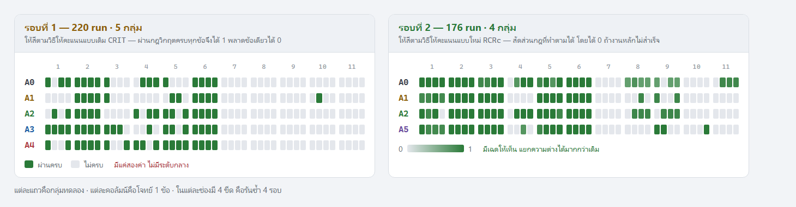
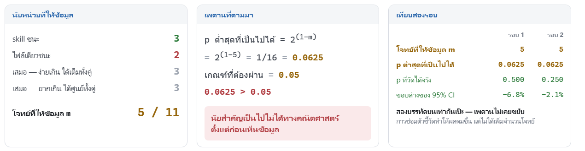
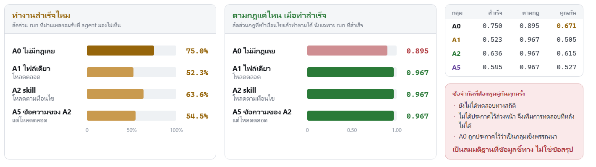

| รอบที่แล้วบอกไว้ | เกิดขึ้นจริง | |
|---|---|---|
| ข้อมูล | 64 run · ยังไม่เปรียบเทียบ | 396 run · เปรียบเทียบครบ |
| ค่าใช้จ่าย | $72 | $287 |
| แผนรัน | 9 รอบต่อโจทย์ · 495 run | ประกาศจริง 6 รอบ · เก็บได้ 4 รอบ เพราะชนโควตา ใช้กฎสำรองที่ประกาศล่วงหน้า — ตัดรอบเท่ากันทุกกลุ่ม ไม่ทิ้งกลุ่มไหน |
| โมเดล | ยังไม่ล็อก | claude-sonnet-5 |
| จำนวนชุดทดลอง | ชุดเดียว | ทำรอบที่ 2 เพิ่ม — ไม่ได้อยู่ในแผน |
| กลุ่มทดลอง | 5 กลุ่ม | รอบ 2 เหลือ 4 กลุ่ม · เพิ่ม A5 |
| H3 rule dilution | วางไว้ 150 run | ไม่ได้เก็บ |

| วิธีให้คะแนน | skill | ไฟล์เดียว | ต่างกัน | ช่วงความเชื่อมั่น 95% | p | |
|---|---|---|---|---|---|---|
| รอบ 1 | CRIT | 36.4% | 27.3% | +9.1 | −6.8 ถึง +27.3 | 0.500 |
| รอบ 2 | RCRc | 61.5% | 50.5% | +11.0 | −2.1 ถึง +27.5 | 0.250 |



| เก็บข้อมูล | จบแล้ว ไม่ต้องเก็บเพิ่ม |
| บทที่ 1 ถึง 7 | ร่างครบแล้ว |
| บทคัดย่อ · Abstract · สารบัญ | เสร็จแล้ว |
| ตรวจเอกสารอ้างอิง 6 จุด | ยังไม่ได้ตรวจ — ผู้วิจัยต้องเปิดเปเปอร์ตรวจเอง |
| ประกอบเล่มลง template ของคณะ | ยังไม่ทำ |